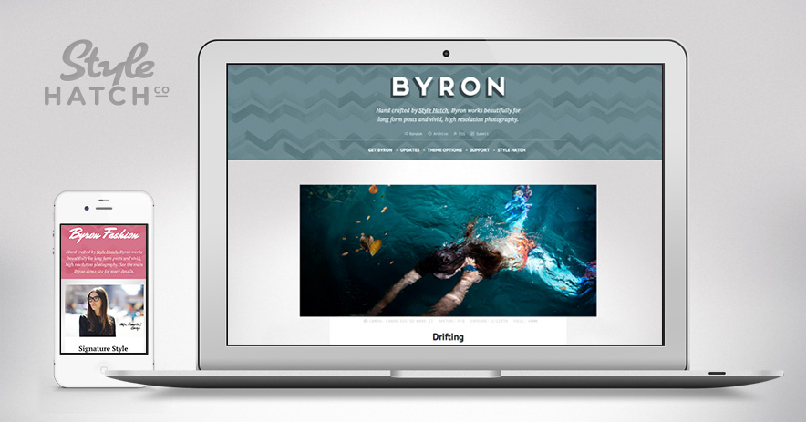

Byron Premium Tumblr Theme
After countless requests for us to create a theme that shines for long-form essays, articles and high-resolution photography we are excited to release Byron. Even though we spent a lot of time on the photo and text posts, every post type has been thoughtfully designed to create one Style Hatch’s most versatile premium themes yet.
From the beginning Byron was designed to be fully responsive so that your blog looks fantastic from the largest resolution screens, all the way down to mobile devices. Go ahead, try it out!
For a slightly softer and more “fashionable” style check out our alternate demo site for Byron Fashion.